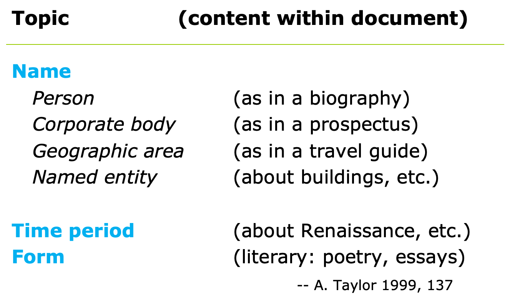
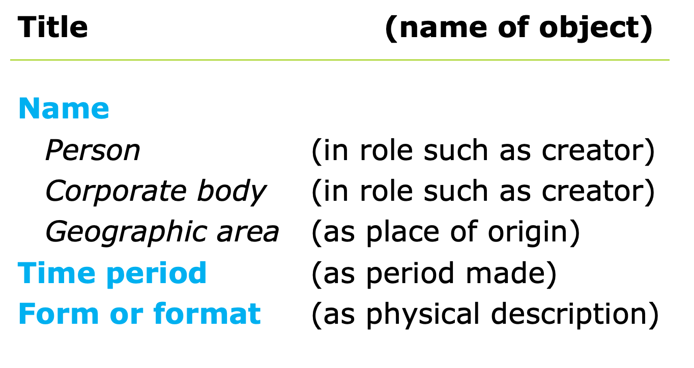
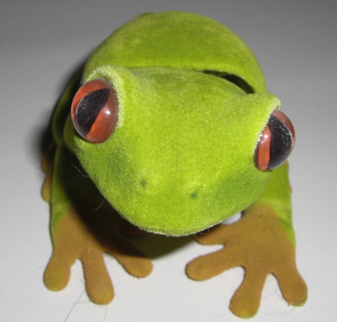
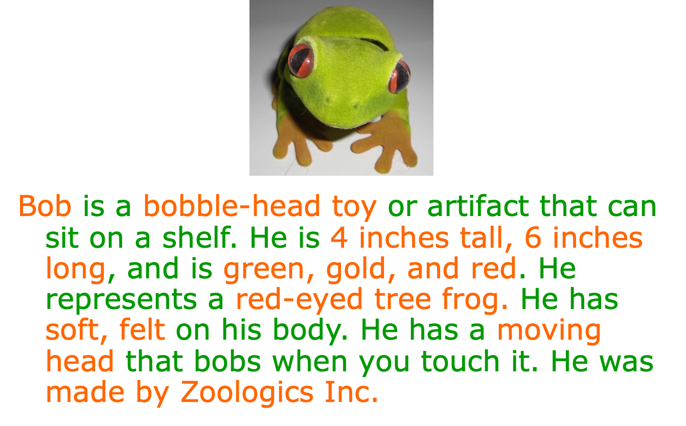
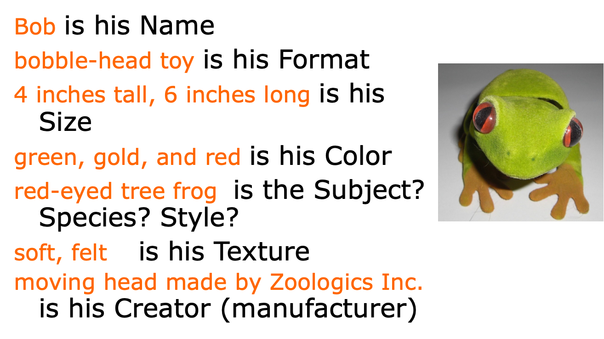
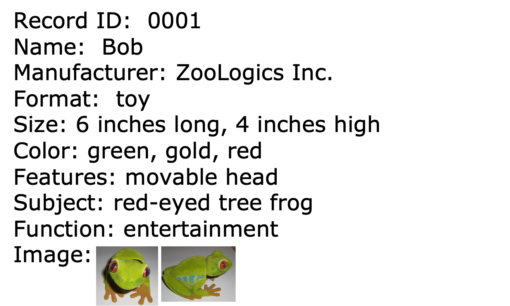
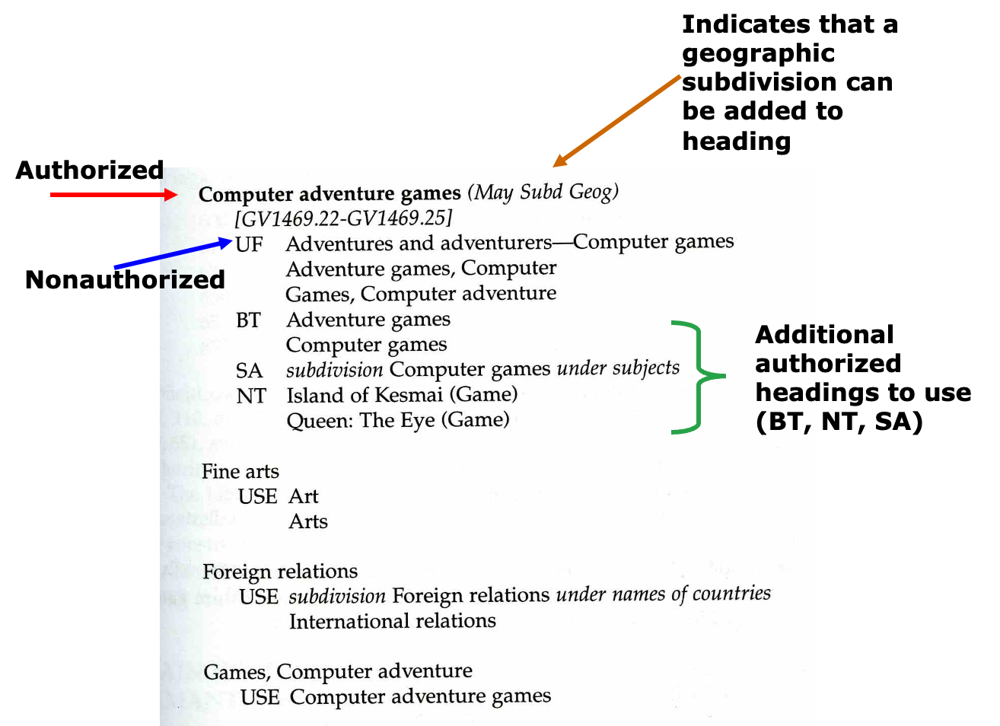

Module 8.1: Subject Access
LIS 5043: Organization of Information
Introduction
What is a Subject?
A subject is . . .
a representation of the intellectual content of an information object,
or
its aboutness, topic, theme, expressed concepts or ideas, area of interest or knowledge.
Understanding Subjects
The traditional view of a subject . . .
is based on bibliographic conventions for representing textual objects
distinguishes between what an object is about and what an object is (i.e., subject description of intellectual content vs. physical description of container or package)
Understanding Subjects
The traditional view of a subject . . .
assumes an object has identifiable intellectual content
Yet subjects are difficult or impossible to identify for a few textual objects and most nontextual objects
Problems in Subject Description
Subjective interpretation based on ambiguous, emotional content
Domain expertise of person doing subject representation
How do our choices align with user’s choices of search terms?
Materials that don’t lend themselves to simple subject representation
Why Distinguish Subject from Physical Description?
To distinguish between work and text
To clarify representations of various kinds of subjects
To provide more access points for searching
To provide intellectual access versus bibliographic access
Representing Intellectual Content
Representing Physical Object
Representing Form
Usually considered subject description:
Literary forms: poetry, essays
Popular genre: romance (fiction), jazz (music)
Type of info: correspondence, bibliography, statistics
Organization of info: calendar, outline, dictionary
Style or technique related to purpose or audience: comedy, drama, persuasion
Style or technique related to time period: Baroque (music), Impressionism (painting)
Representing Format
Usually considered physical description:
Physical media format: book, video, photo, map
Artifact format: sculpture, figurine, vase, shirt
Communication mode: text, image, video, audio
Technical digital format: ASCII/text, HTML, .pdf, .gif
Version/part of work: edition, translation, chapter
Functions of Subject Descriptions
Subject descriptions serve to . . .
- Organize document shelving for physical browsing and retrieval
- Inform searchers about intellectual contents of documents
- Provide consistency of representations
- Assist in collection development and acquisitions
- Assist in collection maintenance
Remember Bob? A bobble-head toy
Attributes for Bob?
Attributes for Bob?
Bob’s Record in the System
How Do We Represent Subject About…
Processes and Products
Subject Indexing
Subject indexing languages
Terms or vocabulary used to represent document content; access points for record retrieval
- Varies from one index or system to next
- May be assigned from authority control list: controlled vocabulary
- May be extracted or derived from document text: natural language
- May be free text or determined by the indexer/cataloger
User-defined/assigned descriptors (social classification, folksonomies, ontologies)
Controlled Vocabulary Indexing
Based on standardized or controlled vocabulary for describing concepts consistently
Terms are assigned to documents
Terms are in subject or descriptor field only
Searcher inputs only controlled vocabulary terms
Controlled Vocabulary Indexing
Subject Authority Control
Vocabulary control of index terms or subject headings
Subject Authority File or List
All terms in any controlled vocabulary
Examples: subject headings list, thesaurus, OCLC subject authority file
Subject Authority Files
Concepts
Subject authority files are databases or collections of subject authority records
Subject authority records contain controlled vocabulary representing subjects
Three kinds of subject authority files are subject headings, thesauri, and LC or OCLC’s authority file
Subject Headings
Subject Headings Lists . . .
- Provide subject headings for cataloging and searching
- Contain both single-concept and multiple-concept (precoordinated) terms
- Indicate semantic relationships (see, BT, NT…)
- Are used to assign a few terms to describe whole document
Subject Headings List Examples
LCSH Example
Library of Congress Subject Heading
- Syndetic Structure
- Relationships
- Equivalent (USE/USE FOR)
- Hierarchical (BT/NT)
- Associative (RT/RT)
- See Also (SA) special instructions to use as subdivisions or to other groups of related headings
- See (works like USE – directs user to other subjects to use, but these terms may not be included in the catalog) These terms may become authorized later.
- Relationships
- Scope notes
LC Subject Headings
- Types of LC headings
- Single noun
Skating - Noun preceded by adjective
Administrative Law - Noun preceded by another noun used like an adjective
Energy industries - Noun connected with another by a preposition
Radioisotopes in cardiology - Noun connected with another by
*and* Libraries and society - Noun followed by parenthetical qualifier
Cluttering (speech pathology) - Phrase or sentence
Show driving of horse-drawn vehicles - Inverted headings
Education, Bilingual - Proper names headings (any name)
- Geographic names
Argentina - Genre/Topic terms
Animated films
- Single noun
Thesauri
Provide descriptors for indexing and searching
Contain mostly single-concept terms
Indicate semantic relationships (BT, NT, RT. . .)
Are used to assign many terms to describe whole/partial document
Thesauri Examples
Thesauri
- The ERIC Thesaurus of Descriptors
- The Art and Architecture Thesaurus
- The Medical Subject Headings of the National Library of Medicine
Other useful resource
- Publications on thesaurus construction and use
Natural Language Indexing
Based on existing vocabulary of documents
Terms are extracted or derived from titles, abstracts, full text
Terms are in title, abstract, descriptor, full-text fields
Searcher inputs any term likely to occur in free text
Free Text
- terms added at the discretion of the cataloger
- do not come from a controlled vocabulary or from the words of the document
- cataloger tries to match user’s terms (user warrant)
- not a frequent practice
- can be used in combination with controlled vocabulary or natural language indexing
.. and now User-Defined
- has many labels (user-supplied, folksonomy, tagging, social classification)
- is really not a new practice but one that has recently become the buzz on the Web with the emergence of blogs and media sharing sites like Blogger, Flickr, YouTube, etc.
- researchers in image retrieval have explored this idea
- researchers in organization of information, thesauri development, indexing, subject representation have also explored this idea
- to date is being used to tag images, web pages, blogs, library catalogs, etc.
- needs to be taken to the next level!!
Considerations When Choosing Terms
Attributes of documents and users
Record field that will contain the data
- out of several potential kinds of subject fields
Domain
Scope
Specificity
Exhaustivity
Specificity and Exhaustivity
Specificity: extent to which index terms precisely represent the subject of the document. Can be general or more specific.Exhaustivity: extent to which indexing represents all concepts in a document.Considerations- Level and complexity of terms in subject area/discipline
- Users’ vocabulary level
- Terminology used in documents
- Example
- Specificity is high if detailed math topics covered, e.g., set operations
- Exhaustivity is high if all math operations in textbook covered
Specificity and Exhaustivity
Is really a continuum
What About Diversity and Subject Access?
What are some of the issues of diversity when we discuss subject access?
- Appropriate level for audience
- Appropriate language to represent subject matter
- Politically correct terms to represent race/ethnic populations
- Assigning incorrect subject terms to prohibit access to collection’s objects